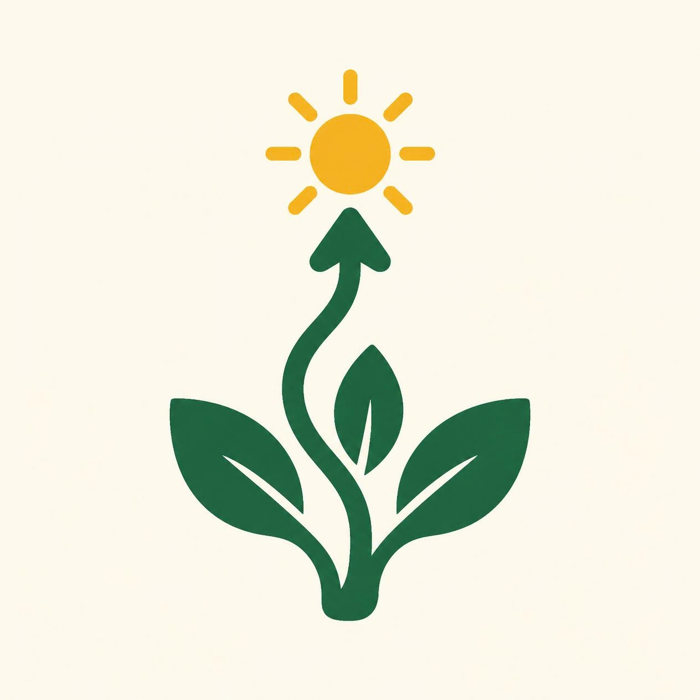

From “I want to become” to “I can actually do.”
Debo Rise is a 6-week program for ambitious students. You learn a real skill, build a real project, and finish with a certificate and a portfolio piece you can show to anyone.

Many students have big dreams. Few have proof.
Social media shows quick success. Real skill takes time, practice, and feedback. Most students learn alone, get no help, and give up before they build anything.
No practical skills
Dreams of being a developer, designer, or creator, but nothing built yet.
Nothing to show
For a job, internship, or university, grades are often the only proof.
No guidance
Random videos, no feedback, and no one to ask when stuck.
What is a debo?
In Ethiopian villages, when the harvest is ready, neighbors gather to help each other bring it in. That gathering is a debo.
Debo Rise does the same for our students’ futures. We gather, we help each other, and we rise together.
One simple method
Every student follows the same five steps.
Choose your field
Beginners are welcome. Not sure yet? You can try all three at our info session.
Web Development
Learn HTML and CSS. Build a responsive website for a real business.
Graphic Design
Design a logo, poster, and social post for a real client.
Video Editing
Plan, film, and edit a short video that tells a real story.
Who benefits
Students
- A real skill and a finished project
- A portfolio to show
- Confidence and a next step
The school
- A stronger reputation
- Students with real projects
- A Showcase Day for parents
Our generation
- Less dreaming, more doing
- Helping each other grow
- Creators, not only consumers
Ready to build something real?
Spaces are limited to about 30 students. Apply, join the info session, and start your first week.